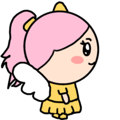
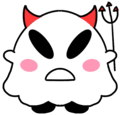
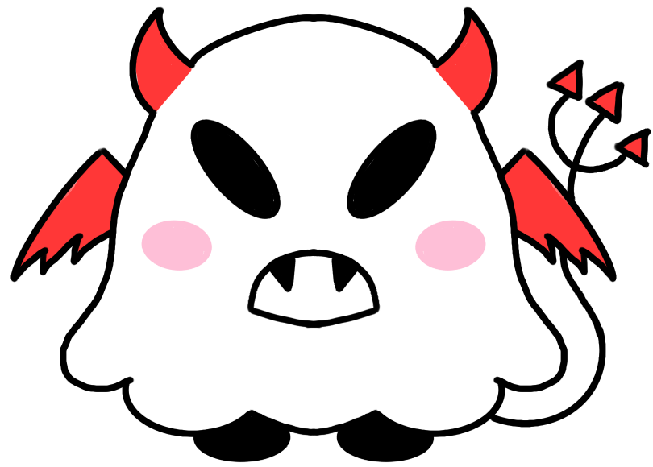
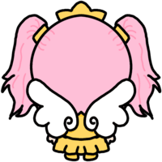
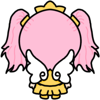
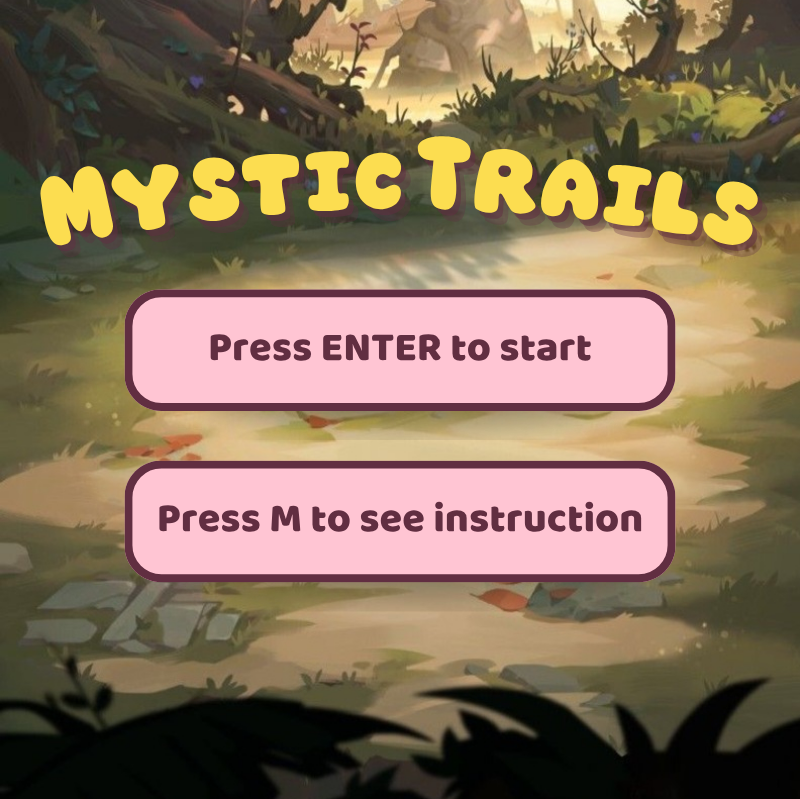
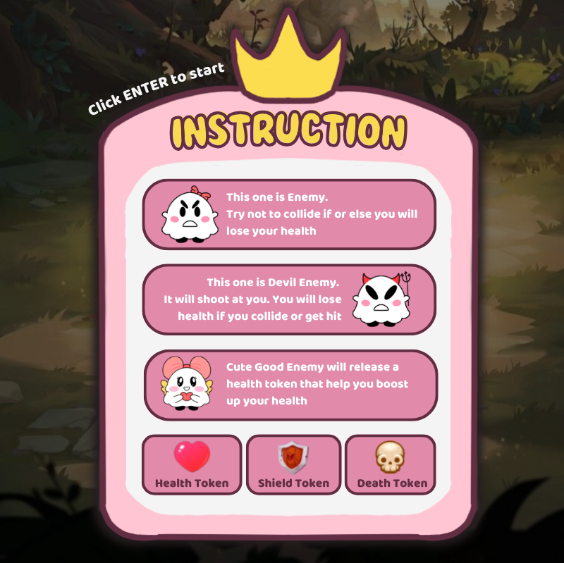
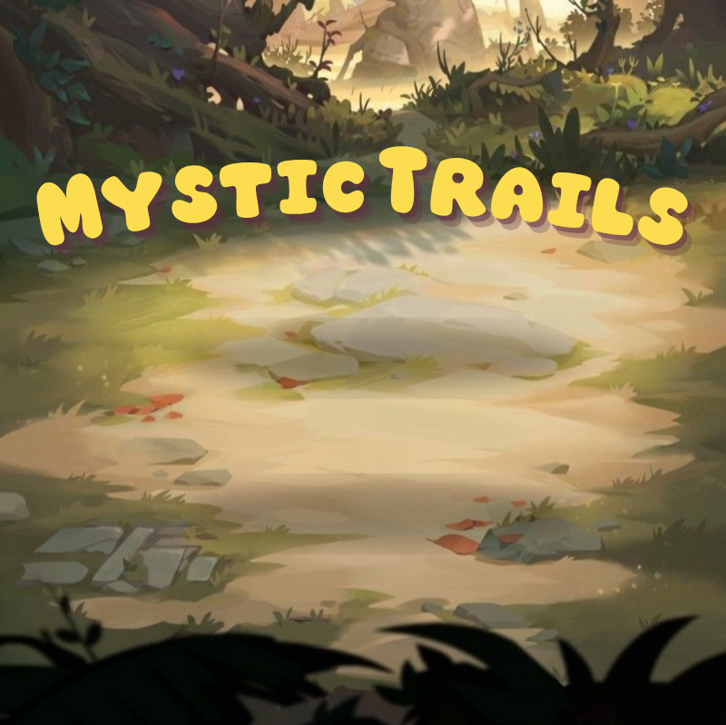

Mystic Trail
A top-down forest shooter where a little angel girl fights off ghosts, collects tokens and takes on the devil boss.
Overview
Mystic Trails is a top-down shooter set on a sunlit forest trail. You play a little angel girl who has to clear the path of mischievous ghosts. Some ghosts just bump into you, devil ghosts shoot back, and one cute helper drops hearts to keep you going. Score enough points and the devil boss appears for the final fight.
Goal of the Project
I wanted to build a full game loop from scratch in Processing, with menus, movement, shooting, enemies with different behaviours, power-ups and a boss. I also wanted it to look cute instead of scary, so every character is a soft, hand-drawn ghost with pink cheeks.
My Role
Design
- Characters — drew the player, three ghost enemies and the devil boss, plus their defeated poses.
- Animation — drew frame sets for standing, walking and attacking in each direction.
- UI design — designed the title screen, instruction card, health bar and score badge.
Development
- Programming — built the game in Processing (Java), from the menu to the boss fight.
- Sound — added background music and sound effects for shooting and collecting tokens.
- Testing & tuning — balanced enemy health, spawn timers and boss timing through playtesting.
How to Play
Everything is played on the keyboard. The background keeps scrolling to make it feel like you're moving down the trail.
-
Start or read the instructions
On the title screen, press
Enterto start, orMto open the instruction card first. -
Move and shoot
Use the arrow keys to move and
Spaceto shoot in the direction you last faced. -
Avoid the ghosts
Bumping into a ghost or getting hit by a devil ghost's shot lowers your HP bar at the top of the screen.
-
Collect tokens
Hearts restore health and shields block damage for five seconds. Watch out for the skull, which cuts your health in half.
-
Beat the boss
Once your score is high enough, the devil boss enters. Defeat it to win, or lose all your HP and try again.
Characters
I drew every character myself in the same soft, round style. Each ghost has a small detail, like a bow, horns or wings, so players can tell them apart at a glance in the middle of a fight.



Tokens
The token icons are free assets I found online, not my own drawings. I chose them for their bright, readable shapes and built the pick-up effects for each one in code.
Animation
The player switches between frame sets depending on what she's doing. Each set loops every few frames, and the sprite flips horizontally when she turns left or right.


Color Palette
Menus
In-game
Final Design
The menus use the same forest trail as the game, with a bold yellow title and soft pink cards, so the look stays the same from the first screen to the boss fight.



Code Structure
Built in Processing with the Minim library for sound. A single game state decides which screen to draw each frame, and every object on screen shares one moving-object base class.
How it's built
- Game states — the main loop switches between title, instructions, gameplay, boss intro, win and lose.
- Physics — arrow keys add force to the player, and damping slows her down smoothly when keys are released.
- Timed spawns — shield and death tokens appear every 15 and 12 seconds, and devil ghosts fire every 3 seconds.
- Boss trigger — once the score is high enough, regular enemies clear and the boss intro plays.
Object-oriented design
-
Base class —
MovingObjecthandles position, velocity, walls and collisions for everything. -
Inheritance —
PlayerandEnemyextendCharacter;EvilEnemy,GoodEnemyandBossbuild onEnemy. -
Overriding — each token subclass of
PickupoverridestakeEffect()with its own power-up. - Feedback — enemies show health bars, and devil ghosts show a countdown ring before they shoot.
Challenges & Reflection
Challenges
- Picking the right animation frames for each direction while moving and shooting at the same time.
- Keeping many enemies, bullets and tokens updating together without slowing the game down.
- Balancing enemy health and spawn timers so the game feels fair but still challenging.
- Timing the switch from regular enemies to the boss so it feels like a real climax.
Reflection
Mystic Trails taught me how much a clear class structure helps a game grow. Once the base classes were in place, adding a new enemy or token only took a small subclass. Drawing my own characters and animation frames also showed me how art and code have to plan around each other, from sprite sizes to frame counts.